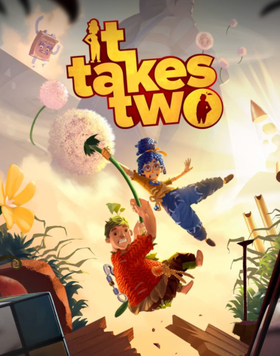

Platformer · 2021
It Takes Two
Every level a new mechanic, playable only with someone else.

Cover: Wikipedia: It Takes Two (video game)
Facts
- Released
- 2021-03-26
- Genre
- Co-op Platformer
- Category
- Platformer
- Platforms
- Nintendo, PC, PlayStation, Xbox
- Developers
- Hazelight Studios
- Publishers
- Electronic Arts
PC requirements
- Minimum
- [object Object]
- Recommended
- [object Object]